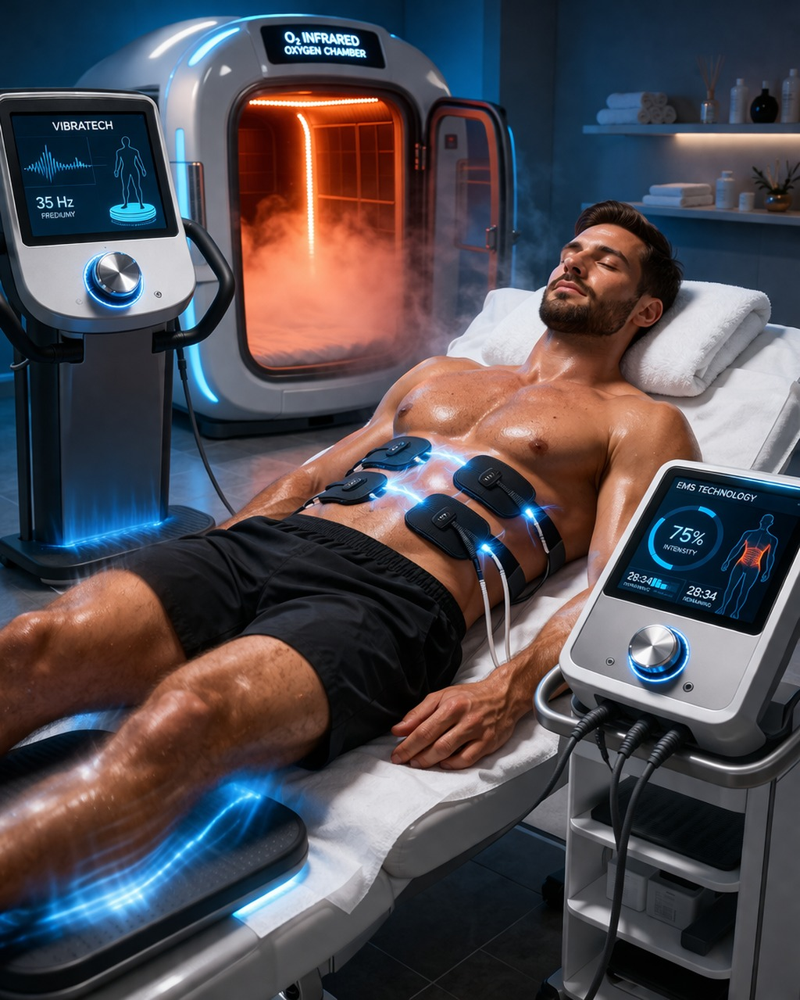
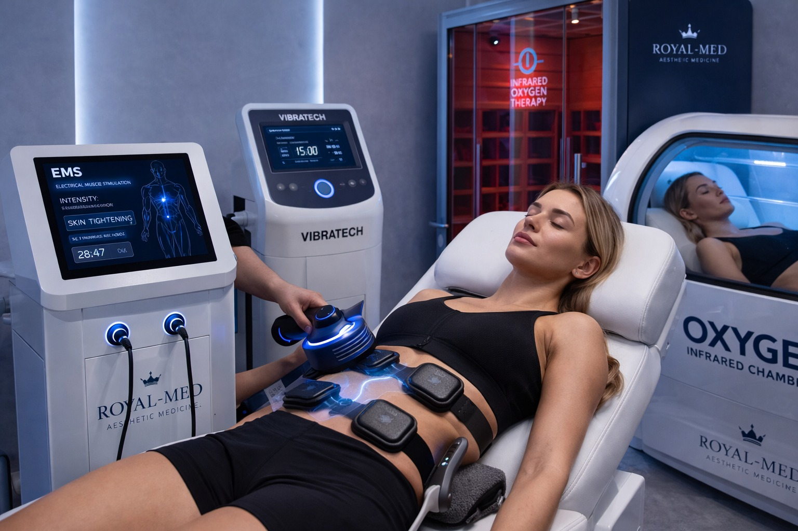
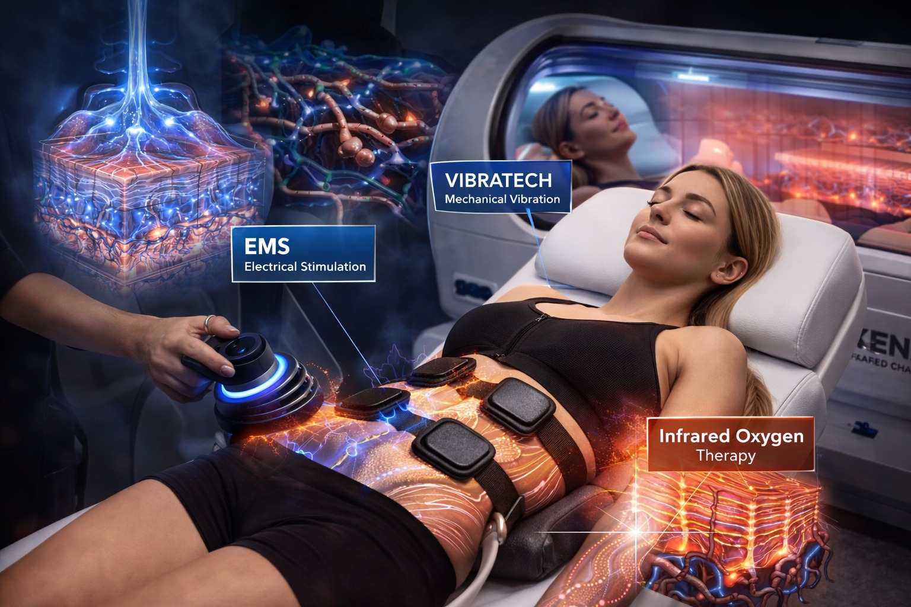

עור רפוי הוא אחת התלונות הנפוצות ביותר בתחום האסתטיקה — ומופיע לאחר ירידה במשקל, הריון, ולידה, ועם הגיל. הסיבה העיקרית: ירידה בייצור קולגן ואלסטין, שהם הסיבים שאחראים על מתיחות וגמישות העור.

ברויאל-מד אנו מטפלים ברפיון עור הגוף בפרוטוקול רפואי מתקדם שמפעיל מחדש את ייצור הקולגן — לשיפור הדרגתי ומדיד.
מה גורם לרפיון עור הגוף?
- ירידה משמעותית במשקל — העור לא מצטמצם מהר כמו הגוף
- הריון ולידה — מתיחה ואז כיווץ מהיר
- הזדקנות טבעית — ירידה בייצור קולגן ואלסטין
- אורח חיים יושבני — פחות גירוי לייצור קולגן
- שינויים הורמונליים
איך עובד הטיפול?

הפרוטוקול שלנו משתמש בטכנולוגיות שמגרות ייצור קולגן ואלסטין בשכבות העמוקות של העור:
- אנרגיית רדיו-פרקוונסי (RF) — חימום מבוקר של הדרמיס לעידוד קולגן
- גירוי מכני מבוקר — הפעלת מנגנוני ריפוי טבעיים
- חומרים ביולוגיים — תמיכה בתהליך הרגנרציה
העור מגיב על ידי בניית קולגן חדש ושיפור הדרגתי בגמישות ומתיחות.
תוצאות שניתן לראות
- שיפור בגמישות ומתיחות העור
- הפחתת מראה "קמוט" ורפוי
- שיפור במרקם העור
- עור חלק, מהוק ומוצק יותר
- שיפור כללי במראה הגוף
התוצאות מתפתחות בהדרגה לאורך 4–8 שבועות לאחר כל טיפול — ומשתפרות עם סיום הסדרה.
אזורי טיפול

- בטן — לאחר הריון או ירידה במשקל
- ירכיים — רפיון פנימי וחיצוני
- זרועות — "כנפיים"
- ישבן — הרמה ומיצוק
- גב תחתון — מיצוק
למי הטיפול מתאים?
- עור רפוי לאחר ירידה במשקל
- עור רפוי לאחר הריון ולידה
- ירידה בגמישות עקב גיל
- מי שמחפש שיפור ללא ניתוח
- כהשלמה לטיפולי EMS
מה חשוב לדעת?
- הטיפול אינו כואב ואין זמן השבתה
- נדרשת סדרה של 4–8 טיפולים
- מרווח מומלץ: 2–4 שבועות בין טיפולים
- תוצאות מיטביות בשילוב עם EMS
- שתייה מרובה לאחר הטיפול מגבירה יעילות
- הטיפול מותאם אישית לאחר אבחון